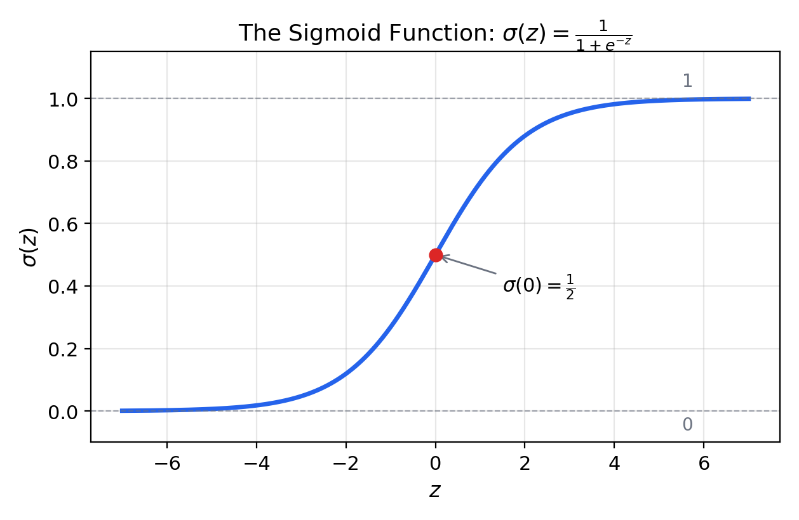
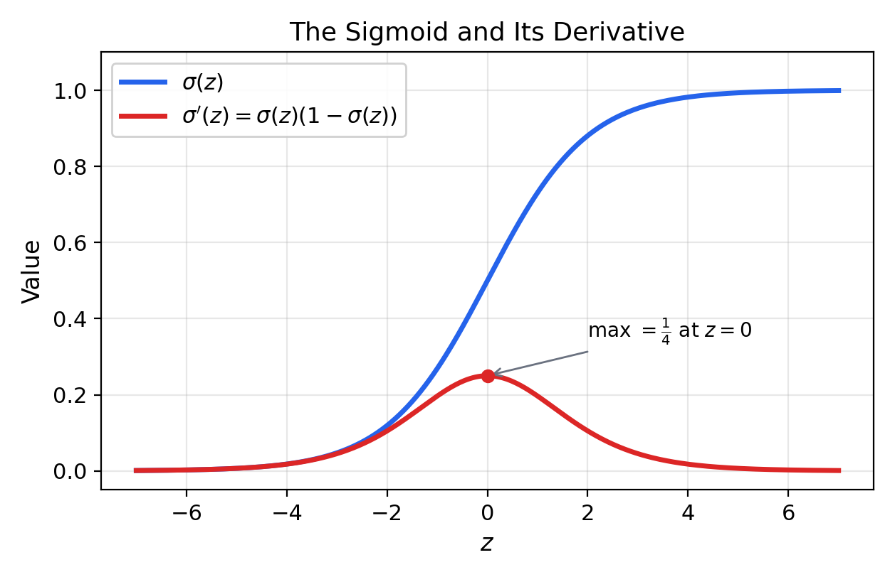
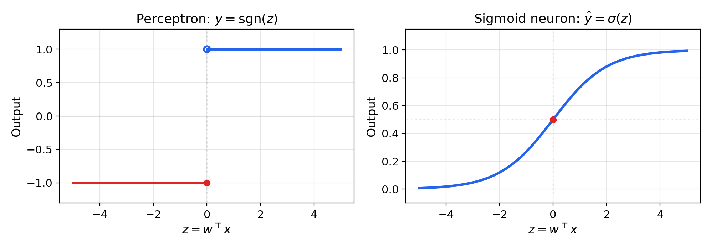
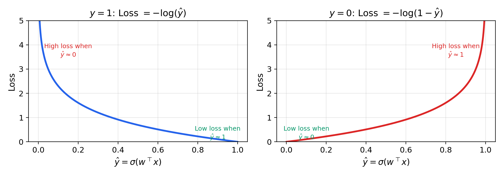
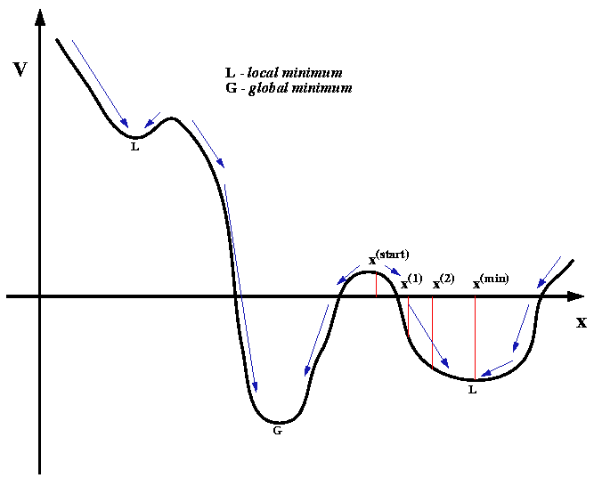
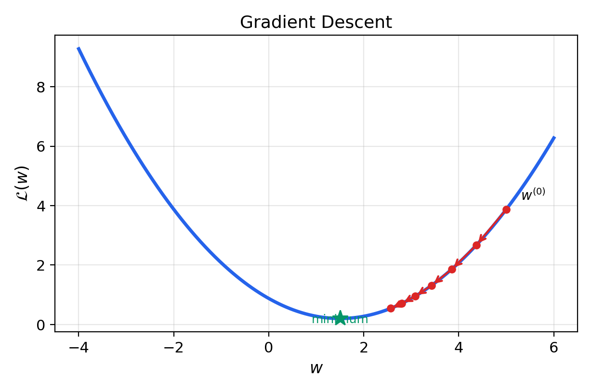
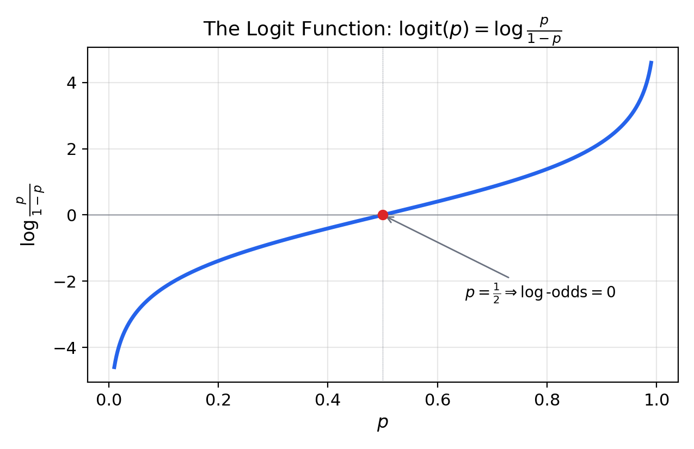

Sigmoid Neurons and Logistic Regression
Outline
- The sigmoid function and its properties
- From perceptron to sigmoid neuron
- The probabilistic model: Bernoulli labels and MLE
- Deriving the cross-entropy loss
- Why not quadratic loss?
- The gradient and its matrix form
- Gradient descent
- Odds, log-odds, and the logit
- Convexity and information theory
- Linear probes
Part I: The Sigmoid Function
Definition
The sigmoid function (logistic function):
$$\sigma(z) = \frac{1}{1 + e^{-z}}$$
Equivalent form:
$$\sigma(z) = \frac{e^z}{e^z + 1}$$
The Sigmoid Curve

Key Properties
- Range: $\sigma(z) \in (0, 1)$ — output interpretable as a probability
- Monotonicity: strictly increasing
- Symmetry: $\sigma(-z) = 1 - \sigma(z)$
- Boundary behavior: $\sigma(-\infty) = 0$, $\sigma(0) = 1/2$, $\sigma(+\infty) = 1$
- Differentiability: infinitely differentiable everywhere
The Derivative of the Sigmoid
$$\sigma'(z) = \sigma(z)(1 - \sigma(z))$$
Derivation: write $\sigma(z) = (1 + e^{-z})^{-1}$, apply the chain rule, and use $1 - \sigma(z) = \frac{e^{-z}}{1 + e^{-z}}$
Sigmoid and Its Derivative

Derivative: Key Observations
- Maximum at $z = 0$: $\sigma'(0) = 1/4$
- Steepest at the decision boundary
- Progressively flatter in "saturated" regions ($\sigma \approx 0$ or $\sigma \approx 1$)
- This shape will matter for the gradient of the loss
Part II: From Perceptron to Sigmoid Neuron
The Perceptron's Limitations
Two fundamental problems with $y = \sgn(w^\top x)$:
- Discontinuous: output jumps from $-1$ to $+1$ — no gradient almost everywhere
- No probabilities: cannot express confidence — only hard binary decisions
The Sigmoid Neuron
Replace the sign activation with the sigmoid:
$$\hat{y} = \sigma(w^\top x) = \frac{1}{1 + e^{-w^\top x}}$$
- Output $\hat{y} \in (0, 1)$ — a continuous probability
- Interpret as $\hat{y} = P(y = 1 \mid x)$
Hard vs. Soft Activation

A Shift in Perspective
- Perceptron: geometric problem — find a separating hyperplane
- Sigmoid neuron: statistical problem — find the parameters of a probability model that best explain the data
Part III: The Probabilistic Model
Labels and the Bernoulli Distribution
- Labels $y^{(i)} \in \{0, 1\}$ (not $\{-1, +1\}$)
- Each label modeled as a Bernoulli coin flip:
$$y^{(i)} \sim \text{Bernoulli}(\sigma(w^\top x^{(i)}))$$
- Probability of heads depends on the input through the sigmoid
The Two Probabilities
$$P(y^{(i)} = 1) = \sigma(w^\top x^{(i)})$$
$$P(y^{(i)} = 0) = 1 - \sigma(w^\top x^{(i)})$$
Compact form using the Bernoulli PMF:
$$p_i = \sigma(w^\top x^{(i)})^{y^{(i)}} \cdot (1 - \sigma(w^\top x^{(i)}))^{1 - y^{(i)}}$$
Maximum Likelihood Estimation
How should we choose $w$? Find the weights that make the training data as probable as possible:
$$\argmax_w \; P(D \mid w)$$
This is maximum likelihood estimation (MLE)
The Likelihood Function
Assuming independence, the likelihood factorizes:
$$P(D \mid w) = \prod_{i=1}^{n} p_i$$
- When $y^{(i)} = 1$: $p_i = \sigma(w^\top x^{(i)})$
- When $y^{(i)} = 0$: $p_i = 1 - \sigma(w^\top x^{(i)})$
Part IV: Deriving the Cross-Entropy Loss
From Likelihood to Surprisal
Maximizing $\prod_i p_i$ is equivalent to minimizing the negative log-likelihood:
$$\mathcal{L}(w) = -\log P(D \mid w) = -\sum_{i=1}^{n} \log p_i$$
- $-\log p_i$ is the surprisal of the correct label for example $i$
- High confidence $\Rightarrow$ low surprisal; wrong prediction $\Rightarrow$ high surprisal
The Binary Cross-Entropy Loss
$$\boxed{\mathcal{L}(w) = -\sum_{i=1}^{n} \left[y^{(i)} \log \sigma(w^\top x^{(i)}) + (1 - y^{(i)}) \log(1 - \sigma(w^\top x^{(i)}))\right]}$$
- Not a design choice — a consequence of the probabilistic interpretation
- The unique loss from MLE on the Bernoulli-sigmoid model
Intuition: The Two Cases
With $\hat{y} = \sigma(w^\top x)$:
- When $y = 1$: loss $= -\log \hat{y}$
- Want $\hat{y} \to 1$: loss $\to 0$
- If $\hat{y} \to 0$: loss $\to \infty$
- When $y = 0$: loss $= -\log(1 - \hat{y})$
- Want $\hat{y} \to 0$: loss $\to 0$
- If $\hat{y} \to 1$: loss $\to \infty$
Cross-Entropy Loss Curves

Confident Wrong Predictions Are Punished Severely
- Logarithmic growth: assigning probability 0.01 to an event that occurs is very costly
- A direct consequence of the surprisal interpretation
- The model that is least surprised by the data wins
Part V: Why Not Quadratic Loss?
The Quadratic Loss Attempt
$$L_{\text{quad}}(\hat{y}, y) = \frac{1}{2}(\hat{y} - y)^2$$
Composing with the sigmoid produces a non-convex loss landscape:
- Local minima and flat regions
- Gradient nearly vanishes in saturated regions
- Gradient descent gets stuck
Non-Convexity of Quadratic + Sigmoid

The Energy Landscape

Cross-Entropy Is Convex
- Cross-entropy + sigmoid is convex in $w$
- Gradient descent guaranteed to find the global minimum
- Not a coincidence: a general property of MLE for exponential family distributions
Part VI: Deriving the Gradient
Setup
Define $a_i = \sigma(w^\top x^{(i)})$ and $\alpha_i = \log \sigma(w^\top x^{(i)})$
Key identity:
$$\log(1 - a_i) = \alpha_i - w^\top x^{(i)}$$
Key derivative:
$$\frac{\partial \alpha_i}{\partial w} = x^{(i)}(1 - a_i)$$
The Gradient
Differentiating and simplifying (the $y^{(i)} x^{(i)} a_i$ terms cancel):
$$\boxed{\frac{\partial \mathcal{L}}{\partial w} = \sum_{i=1}^{n} x^{(i)}(\sigma(w^\top x^{(i)}) - y^{(i)})}$$
- Sum of inputs scaled by the prediction error $(\hat{y}^{(i)} - y^{(i)})$
- Correct predictions contribute $\approx 0$; wrong predictions push $w$ to correct the mistake
Same Structure as the Perceptron
- Perceptron: updates only on mistakes, fixed scale $\pm 1$
- Sigmoid neuron: updates on all examples, scale proportional to prediction error
- The "soft" version of the perceptron update — emerged from probabilistic reasoning
Part VII: The Matrix Form
Batch Notation
Stack inputs as rows and labels as a column:
$$X = \begin{bmatrix} x^{(1)\top} \\ \vdots \\ x^{(n)\top} \end{bmatrix} \in \R^{n \times d}, \qquad y = \begin{bmatrix} y^{(1)} \\ \vdots \\ y^{(n)} \end{bmatrix} \in \R^{n}$$
The Gradient in One Line
$$\boxed{\frac{\partial \mathcal{L}}{\partial w} = X^\top(\sigma(Xw) - y)}$$
- $X^\top$ times the vector of prediction errors
- Design matrix transposed times signed errors
Part VIII: Gradient Descent
The Update Rule
$$w \leftarrow w - \eta \cdot X^\top(\sigma(Xw) - y)$$
- $\eta > 0$: learning rate (step size)
- Move opposite to the gradient — steepest descent
- Repeat until convergence
Gradient Descent on a Convex Surface

Implementation
def sigmoid(z):
return 1.0 / (1.0 + np.exp(-z))
def train(X, y, lr=0.1, epochs=1000):
w = np.zeros(X.shape[1])
for epoch in range(epochs):
y_hat = sigmoid(X @ w)
gradient = X.T @ (y_hat - y)
w = w - lr * gradient
return w
Three lines = three operations: activations, gradient, step
Part IX: Odds, Log-Odds, and the Logit
The Logit Function
The inverse of the sigmoid:
$$\logit(p) = \log \frac{p}{1 - p} = \sigma^{-1}(p)$$
- $p/(1-p)$ is the odds
- $\log(p/(1-p))$ is the log-odds
The Logit Curve

Log-Odds Are Linear
$$\log \frac{P(y=1 \mid x)}{P(y=0 \mid x)} = w^\top x$$
- Each weight $w_j$ is the partial derivative of the log-odds w.r.t. feature $x_j$
- A unit increase in $x_j$ multiplies the odds by $e^{w_j}$
- $w_j = 0.5$: odds increase by 65%
- $w_j = -1$: odds decrease by 63%
Why This Matters
- Every coefficient has a precise, quantitative meaning
- Why logistic regression remains the default in medicine, economics, and social science
- Interpretability is built into the model
Part X: Convexity and Information Theory
Proving Convexity
The loss in logit form: $L(z, y) = \log(1 + e^z) - yz$
$$\frac{\partial^2 L}{\partial z^2} = \sigma(z)(1 - \sigma(z)) > 0 \quad \text{for all } z$$
- Strictly positive second derivative $\Rightarrow$ convex in $z$
- $z = w^\top x$ is linear in $w$ $\Rightarrow$ convex in $w$
- Sum of convex functions is convex
Cross-Entropy and KL Divergence
$$H(q, p) = H(q) + D_{\text{KL}}(q \| p)$$
- Minimizing cross-entropy = minimizing KL divergence between true labels and predictions
- Finding the model whose predictions are closest to truth in the information-theoretic sense
- Generalizes to softmax regression, language models, and LLM training objectives
Part XI: Linear Probes
Probing Learned Representations
Given a representation $h(x)$ from any model, fit:
$$P(y = 1 \mid x) = \sigma(w^\top h(x) + b)$$
- The weights $w$ reveal which directions in representation space encode the property
- Each $w_j$ is the partial derivative of the log-odds w.r.t. dimension $j$
- A standard tool for mechanistic interpretability in deep learning
Summary
- Sigmoid function: $\sigma(z) = 1/(1 + e^{-z})$ — smooth, differentiable, outputs probabilities
- Sigmoid neuron: $y^{(i)} \sim \text{Bernoulli}(\sigma(w^\top x^{(i)}))$
- Cross-entropy loss: negative log-likelihood (surprisal) from MLE — not a design choice
- Gradient: $\nabla_w \mathcal{L} = X^\top(\sigma(Xw) - y)$ — prediction error times inputs
- Gradient descent: $w \leftarrow w - \eta X^\top(\sigma(Xw) - y)$ — soft perceptron updates
- Log-odds are linear: $w_j$ = partial derivative of log-odds, odds multiplier $= e^{w_j}$
- Convexity guarantees a global minimum; KL divergence connects to information theory
- Linear probes: logistic regression on frozen representations for interpretability